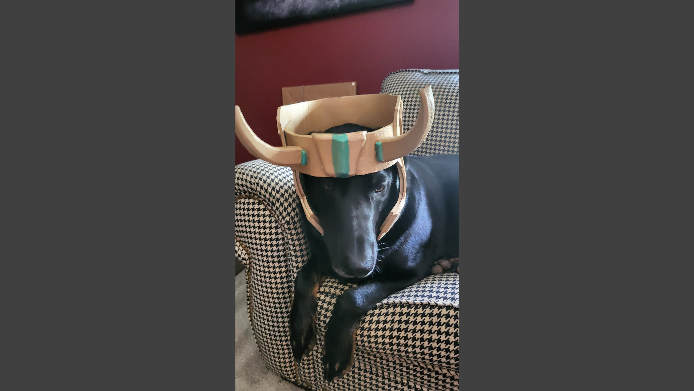
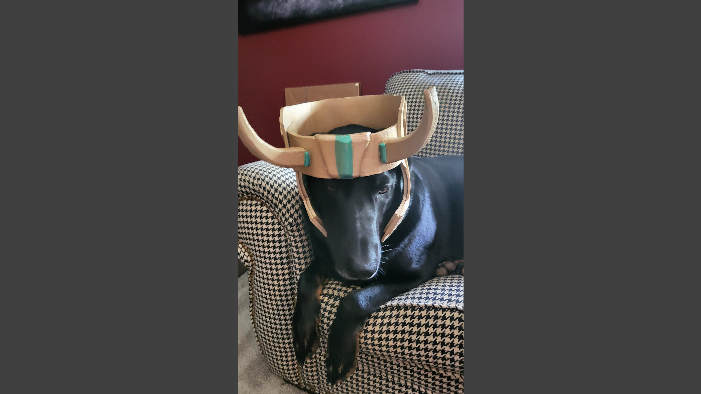

I made this while the loki TV series was airingand finished it before the last episode came out too!.
I didn’t really base it completely off one helmet instead I combined a few.
Mainly combining president Loki's and Sylvie's headdresses with a custom paint job.
It is made out of only foam and sadly has been a little squished, I covered it up pretty well in the images though.
Overall I’m not too happy with the way it came out.
At a glance it looks pretty good but the horns and decoration in the middle are all a bitoff centered.
Furthermore, I spilled glue on it while making it and there are bumps in areas where I could not get all the glue off.
Regardless, I was able to get a prop done within a time limit set for myself which I am pleased with. For one thing I do really enjoy about this prop, is the paint job.
I got to put my own spin on Loki's helmet which was really fun.
 
